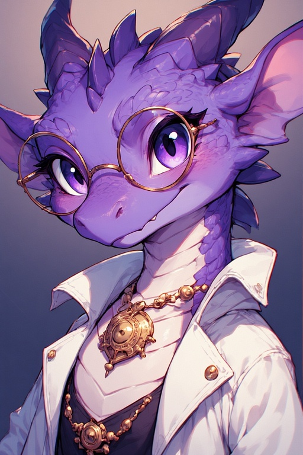

0002 – Olga Kirovsky
Kleiner violett geschuppter Kobold, Ingenieurin und Erfinderin. Primär Crystallus, sekundär Fulgiris, tertiär Aquaris. Entwickelte 3002 allein, arbeitet am Kristallgolem und untersucht mit Valerion die Seelengeode.
Wichtigste Beziehung
Valerion Horatius: Enger Freund und Forschungspartner.